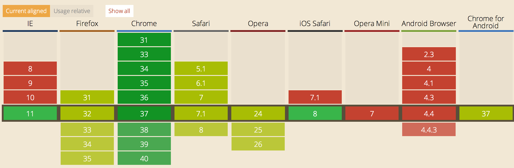
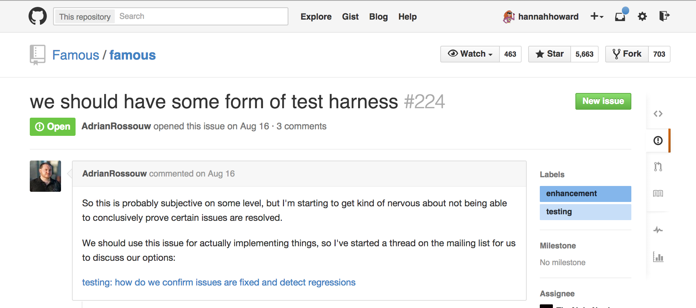

Famo.us
No Speed Limits
This is me...
- Hannah Howard
- @techgirlwonder
- hannah@lrdesign.com
My Crew:
Logical Reality Design

- www.lrdesign.com
- @lrdesign
- Hire Us!
The Plan
- What is famo.us?
- What can it do?
- How does it work?
- Famo.us Angular
- Concerns
- Let's look at some code
What would the web development of your dreams look like?
What if you weren’t confined to boxes and rectangles?
or 2d-anything really
What if you could use real world physics to animate your web pages?
famo.us
Famo.us is an advanced rendering platform for the web
How does Famo.us work?
- Express user interface with Javascript instead of HTML
- Build layout with 3D scene graph instead of CSS and DOM
- Express animations with advanced curves and physics
- famo.us translates your code to fast HTML markup
So you can build this.
(Click to see site)
Or this.
(Click to see site)
You may have heard things like..
- famo.us makes web perform like native!
- I heard they remade Facebook’s Paper app in like 3 days on famo.us!
- famo.us is going to save the web on mobile!
- famo.us cured world hunger!
But how does it really work?
Let's talk about a scene graph.
At this point in the presentation we did an interactive exercise to illustrate how a scene graph describes an arrangement of objects in 3D space.
Famo.us Internal Tricks
- Update 60 times a second using requestAnimationFrame
- Absolute position everything
- Use CSS3 matrix3d transform layout each element.
Let's see the code.
A rectangle
var Engine = require('famous/core/Engine');
var Surface = require('famous/core/Surface');
var Transform = require('famous/core/Transform');
var StateModifier = require('famous/modifiers/StateModifier');
var mainContext = Engine.createContext();
var stateModifier = new StateModifier({
transform: Transform.translate(150, 100, 0)
});
var surface = new Surface({
size: [100, 100],
properties: {
backgroundColor: '#FA5C4F'
}
});
mainContext.add(stateModifier).add(surface);
I gotta do all that to get a freakin <div>?
famo.us gives you a lot
but you have to throw out what you already know
Or do you?
famo.us Angular
- Describe famo.us layout using directives
- $compile used to assemble directives into famo.us objects
- Actual visible html rendered by famo.us
That code from before...
Plus you get the other Angular good stuff...
...like Data-binding
...and MVC architecture
$scope.translate = [150, 100, 0];
$scope.size = [100,000]
Concerns
Can't I do all this with a whole ton of CSS3?
You could.
You could also write all your software with assembler.
Famo.us provides
organization + math
to create fast, awesome, animated interfaces
What about WebGL and Canvas?
WebGL and Canvas are awesome
But they aren't super widely supported

But wait...
Mixed Mode
The future of famo.us
famo.us will combine DOM and WebGL in a single unified interface
* Works with Famo.us Angular
Beta software?
I gotta troll this one...
